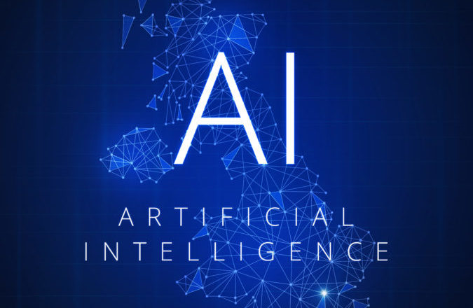

Artificial intelligence (AI)
Links:
The Definition:

The term artificial intelligence was coined in 1956 by The computer scientist John McCarthy . It is a simulation of human intelligence in machines programmed to think like humans and mimic their actions.The ideal characteristic of artificial intelligence is its ability to rationalize and take actions that have the best chance of achieving a specific goal.defines the field of artificial intelligence as “the science and engineering of making intelligent machines.”
As well as the term for the scientific discipline, artificial intelligence refers to the intelligence of a machine, program, or system.